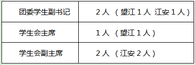

学生会 · 教学通知
关于开展2022-2023学年物理学院团委、学生会主席团换届选举工作的通知
发布时间：2022-06-14
为深入贯彻落实习近平新时代中国特色社会主义思想特别是习近平总书记关于青年工作的重要思想，根据《中国共产主义青年团基层组织选举规则》、《中共四川大学委员会关于进一步推动学生会（研究生会）深化改革的实施意见》，学院团组织拟定于2022年6月启动物理学院团委、学生会主席团换届选举工作。 本次换届选举工作坚持以“公平、公正、公开”为原则，选拔德才兼备的学生干部，以更好地为全院同学服务。现将具体事宜通知如下： 一、人员设置 二、参选条件 1．物理学院在籍本科生。 2．政治面貌应为中共党员或共青团员，具备良好的政治素养，理想信念坚定，热爱和拥护中国共产党，具有强烈的爱国意识和情感，积极弘扬和践行社会主义核心价值观，品行端正、作风务实、乐于奉献，具有全心全意为广大同学服务的觉悟和能力。 3. 学习成绩优良，学习成绩综合排名在本专业前30%，且无课业不及格情况。 4. 对于工作能力强，对团委、学生会工作高度熟悉者，可适当放宽要求。 三、选拔流程 自愿报名 → 初选 → 笔试（线下）→ 面试（线下）→团员代表大会、学生代表大会选举（答辩）→ 公示 → 试用期1月 → 就职 1．自愿报名：符合条件的同学自愿填写报名表（见附件）。 2．笔试：回答与团委、学生会各项工作有关的问题。 3．面试：对竞选者进行压力面试，问题主要涉及到思想领悟、应变能力、抗压能力、共青团工作改革、学生工作常见问题处理等。 4．团员代表大会、学生代表大会选举（答辩）：各位候选人准备5分钟的PPT讲解，3分钟的评委问答。 PPT讲解内容包括但不限于：个人简介、竞选优势、就职构想。 5．公示：对竞选结果进行公示，接受师生意见。 6．试用：公示无异议的同学进行1个月的试用阶段。 7．就职：试用期满考核合格后正式履职。 四、报名 愿意报名且符合条件的同学请于6月17日24点前将电子版报名表发送至：wlxyxshzxt@163.com。 五、注意事项 1．所有申报材料必须真实有效，一旦发现弄虚作假，取消选举资格。 2. 具体面试形式以实际通知为准，请报名者保持通信畅通。 3. 如有疑问，可联系郭瑞锋同学。 电话：18628880568 QQ：954411387 物理学院2022-2023学年团委、学生会主席团换届申请表.docx
